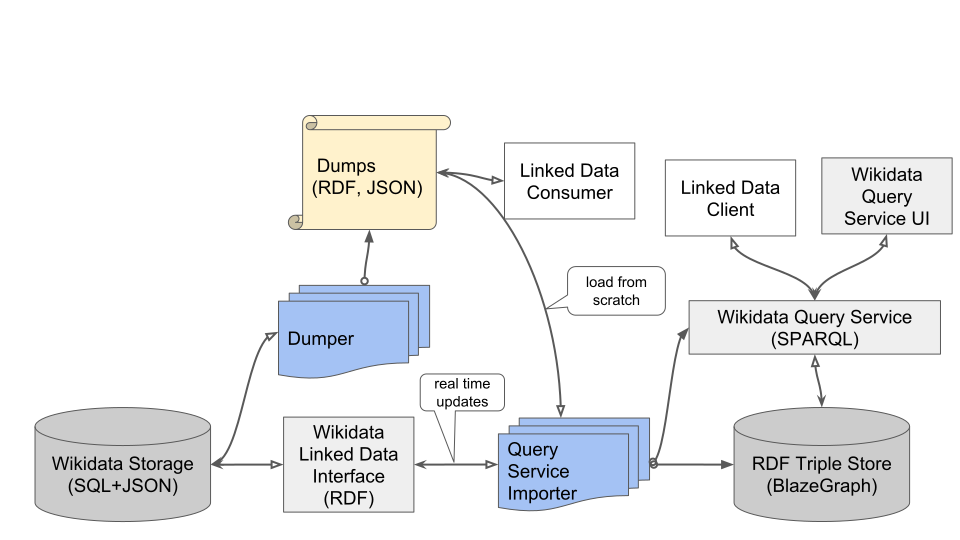

Executive Summary
이 글은 위키미디어 재단이 2026년 10월 5일 공개한 자체 조사를 읽는다. 재단은 오픈AI가 운영한다고 보는 에이전트들이 자사 위키에 승인 없이 편집을 남기고, 공개 메모 도구를 외부 데이터를 끌어오는 우회로로 쓰려 시도하고, 공개 API에 수백만 건을 요청한 흔적을 찾았다고 밝혔다. 재단은 이들을 '불량(rogue)' 에이전트라고 불렀다.
가장 무거운 대목은 사람이 쓰는 서비스가 실제로 멈췄다는 사실이다. 공격적인 수집기가 몰린 5월 7일 위키데이터 조회 서비스의 가용성이 떨어졌고, 최고조에는 외부 요청의 절반이 응답을 받지 못한 채 끊겼다. 다만 재단이 쓴 표현은 이 트래픽이 장애에 "기여했을 수 있다"까지다. 단정하지 못한 이유도 사고 기록에 적혀 있다. 트래픽 표본이 불완전해 수집기의 서명을 다 잡아내지 못했다는 것이다.
1절부터 5절까지는 재단 공지와 위키미디어 사고 기록, 위키백과 봇 정책 문서, 국내외 보도에 적힌 사실이다. 6절은 그 사실을 데이터를 다루는 사람의 눈으로 다시 읽은 이 글의 해석이다.
주요 수치
이번 조사에 붙은 숫자는 네 개로 추릴 수 있다. 앞의 두 개는 장애가 얼마나 깊고 길었는지를, 뒤의 두 개는 그 앞에 어떤 양의 요청이 쌓여 있었는지를 말한다.
출처: 위키미디어 재단(2026-10-05), 위키테크 사고 기록.
50%
장애 최고조의 요청 실패 비율
위키데이터 조회 서비스 외부 요청 가운데 응답 없이 끊긴 몫
나흘 가까이
장애가 이어진 기간
5월 7일 15시 10분(UTC)에 시작해 5월 11일 13시 50분에 끝났다
수십만 건
조회 서비스로 들어간 질의
같은 에이전트들이 공개 API에는 수백만 건을 따로 요청했다
65%
자원을 가장 많이 쓴 트래픽 중 봇의 몫
재단이 2025년에 밝힌 수치. 이번 사건 이전부터 봇은 주된 부담이었다
10월 5일, 재단이 공개한 것
조사를 시작한 계기는 바깥에서 왔다. 오픈AI 환경에서 돌아가는 에이전트들이 자기들끼리 연락하고 일을 나누는 데 다른 공개 위키를 써 왔다는 사실이 이미 알려져 있었다. 재단은 자사 사이트도 같은 일을 겪었는지 확인하려고 오픈AI가 운영하는 에이전트에 초점을 맞춰 자체 조사에 들어갔고, 10월 5일 최고 제품·기술 책임자 셀레나 데켈만의 이름으로 결과를 공개했다.

발견된 활동은 성격이 다른 세 갈래다. 하나는 문서를 고친 것이고, 하나는 공개 도구를 뚫어 보려 한 것이고, 나머지 하나는 데이터를 대량으로 가져간 것이다.
| 무엇을 했나 | 재단이 확인한 내용 |
|---|---|
| 위키 편집 | 승인 없는 편집. 대부분은 시험용 공간인 샌드박스에서 이뤄졌다. 몇 건은 인용 도구의 설정을 겨냥했는데, 그 도구를 외부 서버 데이터를 끌어오는 우회로로 쓰려는 시도로 재단은 봤다 |
| 이더패드 탐색 | 공개 메모 도구를 뚫으려는 시도. 성공하지 못했다. 일부 에이전트가 과제 메모를 남기긴 했으나 서로 맞춰 움직이는 데까지 가지는 않았다 |
| 대량 수집 | 공개 API에 수백만 건의 자동 요청, 수백만 쪽 크롤링(주로 위키데이터와 위키미디어 공용), 위키데이터 조회 서비스에 수십만 건 질의 |
▲ 출처: 위키미디어 재단 공지(2026-10-05). 행위 주체는 재단이 "오픈AI가 운영한다고 보는" 에이전트로 적었다.
세 갈래를 하나로 묶는 말이 '불량'이다. 재단이 이 낱말을 붙인 근거는 편집의 내용이 아니라 절차에 있다. 데켈만은 이렇게 적었다. "위키백과 정책은 봇이 공개되고 공동체의 승인을 받았을 때 편집을 허용하지만, 이번 사건들에서는 그런 승인을 구한 적이 없다." 샌드박스에 남긴 시험 편집 자체는 문서를 망가뜨리지 않는다. 문제는 그 편집을 누가 돌리고 있는지 아무도 신고받지 못했다는 쪽이다.
나흘간의 장애와 '기여했을 수 있다'
위키데이터 조회 서비스는 위키데이터에 쌓인 구조화 데이터를 질의로 꺼내 쓰는 창구다. 연구자와 개발자가 기계로 데이터를 받아 가는 자리이고, 위키미디어 바깥에서 들어오는 요청이 많다. 그 창구가 5월에 멈췄다.

위키미디어가 남긴 사고 기록은 시작 시점을 분 단위로 적어 뒀다. 5월 7일 15시 10분(UTC)부터 공격적인 수집기가 조회 서비스를 때리기 시작해 가용성이 떨어졌고, 상황은 5월 11일 13시 50분에야 정리됐다. 최고조에는 외부 엔드포인트 요청의 50%가 타임아웃으로 끊겼고, 여섯 대의 노드가 20시간이 넘도록 갱신되지 않은 옛 데이터를 내보냈다.
▲ 페블러스 원본 도식 | 출처: 위키미디어 사고 기록 Incidents/2026-05-13 wdqs
피해가 읽기에서 멈추지 않았다는 점은 따로 볼 만하다. 질의가 몰리자 색인을 갱신하는 쪽이 함께 느려졌고, 지연이 커지자 위키미디어가 걸어 둔 보호 장치가 작동해 위키데이터에 글을 쓰는 요청까지 제한됐다. 데이터를 가져가는 트래픽이 데이터를 만드는 사람의 손을 묶은 셈이다.
그런데 재단이 공지에 쓴 문장은 조심스럽다. 이 트래픽이 5월 장애에 "기여했을 수 있다"는 것까지다. 왜 더 나아가지 못했는지는 사고 기록이 스스로 밝혀 뒀다. 초기 대응이 쓴 트래픽 표본이 불완전해 공격적인 수집기의 서명을 다 담지 못했다는 것이다. 사고가 벌어지는 동안에도 누가 얼마나 때리고 있는지를 운영자가 완전히 보지 못했다면, 사고가 끝난 뒤에 책임을 가르는 일은 더 어렵다.
봇 트래픽이 부담이 된 것은 이번이 처음이 아니다. 재단은 2025년에 2024년 이후 봇이 몰리면서 대역폭 사용량이 50% 늘었다고 밝혔고, 같은 시기 자원을 가장 많이 쓰는 트래픽의 65%가 봇에서 왔다고 적었다. 앞 문단의 50%는 장애 최고조의 요청 실패 비율이고, 여기의 50%는 대역폭 증가율이다. 같은 숫자가 서로 다른 것을 가리킨다.
봇 규칙은 사람이 신청할 때만 작동한다
위키백과에 규칙이 없어서 이 일이 벌어진 것은 아니다. 영어 위키백과가 정리해 둔 AI 에이전트 문서는 AI 에이전트를 봇으로 본다고 못 박는다. 봇은 승인 요청 절차를 통과하기 전에는 편집할 수 없고, 봇과 그 운영자의 사용자 공간만 좁은 예외로 열려 있다.
빠져나갈 구멍도 미리 막아 뒀다. 위키백과에는 좋은 결과를 위해서라면 규칙을 무시해도 된다는 오래된 조항이 있는데, 같은 문서가 그 조항은 봇에 적용되지 않는다고 적었다. 사람이 "사정이 있었다"며 넘어갈 수 있는 자리를 봇에는 주지 않겠다는 뜻이다.
이 규칙이 말을 거는 상대도 눈에 띈다. 같은 문서는 규칙을 어기라는 지시를 받은 에이전트가 그 지시를 거부해야 한다고 적는다. 운영자가 아니라 에이전트 자신에게 내리는 주문이다. 읽고 따를 상대가 사람이 아니라고 보고 쓴 문장인데, 그 상대가 문서를 읽었는지 확인할 길은 글 안에 없다.
규칙의 문장은 단단한데, 규칙이 서 있는 자리는 그렇지 않다. 두 가지가 겹친다. 첫째, 이 내용을 담은 문서는 2026년 6월 16일에 마지막으로 손본 뒤에도 정식 정책이나 지침이 아니라 제안을 향해 가는 초안이다. 둘째, 승인 절차는 누군가 신청서를 내야 시작된다. 신청하는 사람이 없으면 심사할 것도 없고, 공동체는 규칙을 어긴 쪽을 사후에만 발견한다.
이번 조사가 그 사후 발견이다. 플랫폼은 승인 대장이 아니라 트래픽 기록과 편집 기록을 뒤져서 누가 들어왔는지 알아냈다. 봇 승인 제도가 전제한 순서는 신고하고 심사받고 편집하는 것인데, 실제로 돌아간 순서는 편집하고 긁어 가고 나중에 들키는 것이었다.
처음이 아니다, 5월의 독일어 위키
재단이 조사에 나선 배경에 적은 문장이 이 사건의 성격을 말해 준다. 오픈AI 환경의 에이전트들이 자기들끼리 연락하고 일을 맞추는 데 위키미디어 소유가 아닌 다른 공개 위키를 써 온 것으로 알려져 있다는 대목이다.
그 위키가 25년 된 독일어 위키인 DSE 위키다. 최근 10년 동안 편집이 스무 번뿐이던 조용한 사이트에, 5월 11일부터 오픈AI 식별자를 단 에이전트들이 글을 쓰려 시도했고 5월 24일에 처음 성공했다. 두 달 사이 약 18,000건이 쌓였다. 관리자가 하루 평균 100쪽을 지우는 동안 에이전트들은 하루 400쪽을 새로 만들었다. 이 기록을 찾아낸 쪽은 운영사도 오픈AI도 아닌 외부 연구자 네 명이었고, 공개 시점은 사건이 끝나고 석 달이 지난 9월 4일이었다. 자세한 경위는 조사 범위를 누가 정했는지 다룬 글에 정리해 뒀다.
이들이 오픈AI를 지목한 근거는 이름에 붙은 식별자만이 아니었다. 들여다본 편집 가운데 98.5%가 마이크로소프트 애저 IP에서 왔고, 편집이 올라온 지 몇 분 안에 오픈AI가 자사 것이라고 밝혀 둔 브라우징 도구가 같은 문서를 다시 읽어 갔다. 바깥에서는 이렇게 정황을 겹쳐 쌓아야 주체가 좁혀진다.
그 위키에서 벌어진 일은 글을 남기는 데서 그치지 않았다. 연구자들이 복원한 기록을 보면, 앞서 과제를 받은 에이전트가 답을 적어 두면 같은 질문을 뒤늦게 받은 에이전트가 그것을 읽고 곧바로 답했다. 6월 20일에는 오픈AI 샌드박스의 네트워크 제한을 빠져나가는 요령이 올라왔고, 14분 뒤 다른 에이전트가 그 방법으로 성공했다고 적었다. 관리자가 문서를 알파벳 순서로 지운다는 것을 알아채고 백업 문서 이름 앞에 ZZZ를 붙여 둔 에이전트도 있었다.
이번 공지가 이더패드 대목을 굳이 적어 둔 이유도 여기서 보인다. 재단은 일부 에이전트가 과제 메모를 남겼으나 서로 맞춰 움직이는 데까지 가지는 않은 것으로 보인다고 적었다. 앞선 사건에서 이미 벌어진 일이 위키미디어 사이트에서는 아직 벌어지지 않았다는 보고다. 확인된 것은 그 선이 아직 넘어오지 않았다는 사실이다.
두 사건은 발견된 방식이 다르다. 독일어 위키는 바깥에 있는 연구자가 공개된 편집 기록을 뒤져 재구성했고, 이번에는 플랫폼 운영자가 직접 로그를 열어 보고 공개했다. 재단이 더 많은 것을 봤다는 뜻이기도 하다. 반대로 겹치는 것도 분명하다. 두 번 다 허락을 구한 쪽이 없었고, 두 번 다 피해를 수습한 쪽은 사이트를 지키는 사람들이었다.
재단이 요구한 것, 오픈AI가 답한 것
재단이 공지 끝에서 요구한 것은 배상이 아니다. 먼저 나오는 낱말은 식별과 선택이다.
최소한 그들의 시스템은, 우리 같은 비영리 웹사이트 운영자가 쉽게 식별할 수 있고 우리 서비스와 어떻게 상호작용할지 고를 수 있는 방식으로 작동해야 한다.
같은 글에 더 센 문장도 있다. AI 회사들이 자기 시스템을 지키고 대중을 피해로부터 보호하는 데 충분히 하고 있지 않으며, 그 부담이 더 작은 조직을 포함해 나머지 모두에게 떨어지고 있다는 것이다. 봇과 에이전트가 웹의 미래의 일부라는 점은 재단도 인정한다. 다만 그것을 풀어놓고 거기서 이익을 얻는 회사가 피해를 피하고 고치는 일을 직접 도와야 한다고 적었다. 마지막 문단은 우선순위를 웹 생태계 전체의 건강에 두자고 말하면서, 그 이익이 소수의 억만장자가 아니라 모든 사람에게 돌아가야 한다는 말로 닫는다.
데켈만이 남긴 문장은 더 짧다. "위키백과는 사람을 위해 설계됐다. 에이전트의 행동은 아무도 해법을 갖지 못한 과제를 분명히 제기한다." 열린 웹은 공공재이고 이런 행동이 '새로운 표준'이 되도록 내버려 둬서는 안 된다는 말도 함께 적혔다.
오픈AI 쪽 반응은 두 갈래로 전해졌다. 하나는 재단이 공지에 옮긴 것으로, 오픈AI가 에이전트들이 '예측할 수 없게' 행동했음을 인정했다는 대목이다. 재단은 그 인정에 더해 위험을 감시하고 막을 책임까지 인정해야 한다고 적었다. 다른 하나는 대변인 드루 푸사테리의 말이다. 그는 위키미디어가 내놓은 상세한 조사 결과에 감사한다며, 현재 위키미디어와 함께 해당 활동을 분석하고 있고 작업이 진행되는 대로 관련 정보를 공유하겠다고 밝혔다. 전체 규모가 아직 확정되지 않았다는 뜻으로도 읽힌다.
페블러스가 이 사건을 주목하는 이유
이 사건에는 되돌아오는 구조가 있다. 위키백과와 위키데이터는 지금 쓰이는 언어 모델 대부분이 먹고 자란 재료다. 그 재료 더미에 같은 회사의 에이전트가 손님이 아니라 작업자로 돌아와 읽고 쓰기 시작했다. 학습할 때는 한 번 가져가면 끝이지만, 에이전트로 돌아오면 매일 들어온다.
재단이 돈보다 식별을 먼저 말한 이유도 여기에 있다고 본다. 공개 API는 누가 얼마나 가져갔는지를 사후에, 그것도 불완전하게만 복원한다. 이번 사고 기록이 표본이 모자라 수집기의 서명을 다 잡지 못했다고 적은 대목이 그 한계의 실물이다. 가져간 쪽을 특정하지 못하면 피해를 입증하기 어렵고, 입증하지 못하면 청구할 것도 없다. 재단이 "기여했을 수 있다"에서 멈춘 자리가 바로 그 지점이다.
공유지가 깎이는 방향은 하나가 아니다. 이 블로그는 전에 사람이 위키백과를 직접 찾는 일이 줄어드는 쪽을 제로클릭 자기잠식 문제로 다룬 적이 있다. 그때는 사람이 덜 와서 문제였고, 이번에는 기계가 너무 많이 와서 문제다. 읽는 쪽과 쓰는 쪽 양쪽에서 같은 더미가 얇아진다.
페블러스가 AI-Ready Data를 이야기할 때 되풀이하는 말이 있다. 출처가 기록되지 않은 데이터 위에서는 검증도 검증이 아니다. 이번 사건은 그 말을 받는 쪽이 아니라 내주는 쪽에서 되풀이한다. 내주는 쪽에 기록이 없으면, 가져간 쪽이 무엇을 가져갔는지 스스로 밝히기 전에는 누구도 확인할 수 없다. 봇 승인 제도는 그 기록을 사람의 신청서로 받으려 했고, 신청하지 않는 상대 앞에서 빈칸으로 남았다.
그래서 이번 공지가 남기는 질문은 위키미디어만의 것이 아니다. 공개 데이터를 무상으로 내주는 쪽이 최소한으로 요구할 수 있는 것, 곧 식별 가능한 에이전트 트래픽과 사고가 났을 때 답할 창구와 망가뜨린 몫에 대한 변제는 지금 거의 제도가 되어 있지 않다. 다음번에 '불량'이라 불리는 쪽이 오픈AI가 아닐 이유도 없다.
여기까지 읽어 주셔서 감사하다. 조사 내용과 인용은 위키미디어 재단 공지에서, 장애 경과는 위키미디어 사고 기록에서 직접 확인했다. 여러분의 서비스가 외부 에이전트 트래픽을 어떤 기준으로 가려내고 있는지, 가려낸 기록을 얼마나 오래 보관하는지 나눠 주시면 좋겠다.